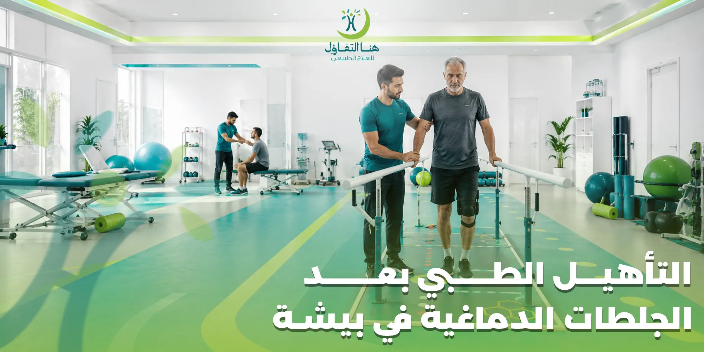

تُعد الجلطات الدماغية من أكثر الحالات التي تؤثر على الحركة والقدرة على أداء الأنشطة اليومية، وقد يعاني المريض بعدها من ضعف في أحد جانبي الجسم، أو صعوبة في المشي، أو فقدان التوازن، أو محدودية في استخدام اليد، مما يجعل التأهيل الطبي والعلاج الطبيعي جزءًا أساسيًا من رحلة التعافي.
في مركز هنا التفاؤل للعلاج الطبيعي في بيشة نقدم برامج متخصصة في التأهيل الطبي بعد الجلطات الدماغية، تهدف إلى مساعدة المريض على استعادة قدراته الحركية تدريجيًا، وتحسين التوازن، وزيادة الاعتماد على النفس، من خلال خطة علاجية يتم تصميمها وفق احتياجات كل حالة.
لماذا يعد التأهيل بعد الجلطة الدماغية مهمًا؟
بعد حدوث الجلطة الدماغية تبدأ مرحلة جديدة لا تقل أهمية عن العلاج الطبي، وهي مرحلة إعادة التأهيل. فالدماغ يمتلك قدرة على إعادة تنظيم بعض الوظائف من خلال التدريب المستمر، ويهدف العلاج الطبيعي إلى استثمار هذه القدرة عبر تمارين وبرامج علاجية تساعد المريض على استعادة أكبر قدر ممكن من الحركة والاستقلالية.
ويساعد برنامج التأهيل على:
- تحسين القدرة على المشي.
- زيادة قوة العضلات.
- تحسين التوازن.
- استعادة حركة الذراع واليد.
- تحسين القدرة على الوقوف.
- تقليل تيبس المفاصل.
- تحسين أداء الأنشطة اليومية.
- رفع مستوى الاستقلالية وجودة الحياة.
من يحتاج إلى برنامج التأهيل بعد الجلطات الدماغية؟
لا يقتصر التأهيل على الحالات الشديدة فقط، بل يمكن أن يستفيد منه كثير من المرضى الذين يعانون من مشكلات حركية بعد الجلطة، مثل:
- ضعف الحركة في الذراع أو الساق.
- الشلل النصفي.
- صعوبة المشي.
- فقدان التوازن.
- ضعف التحكم في اليد.
- صعوبة الوقوف.
- صعوبة الانتقال من الجلوس إلى الوقوف.
- انخفاض القدرة على أداء الأنشطة اليومية.
ويتم تحديد البرنامج المناسب بعد تقييم شامل للحالة.
كيف يتم تقييم الحالة في مركز هنا التفاؤل؟
قبل بدء جلسات العلاج الطبيعي، يجري أخصائي العلاج الطبيعي تقييمًا دقيقًا للحالة لمعرفة مستوى الأداء الحركي ووضع خطة علاجية مناسبة.
ويتضمن التقييم:
- مراجعة التاريخ الطبي.
- معرفة تاريخ الإصابة بالجلطة.
- تقييم قوة العضلات.
- تقييم مدى حركة المفاصل.
- تقييم التوازن.
- تقييم المشي.
- تقييم القدرة على استخدام اليد.
- تحديد مستوى الاعتماد على النفس في الأنشطة اليومية.
ومن خلال هذه المعلومات يتم إعداد برنامج تأهيلي يناسب احتياجات كل مريض.
ماذا يشمل برنامج التأهيل الطبي بعد الجلطات الدماغية؟
في مركز هنا التفاؤل يتم تصميم برنامج علاجي فردي لكل مريض، وقد يشمل:
- تمارين تحسين الحركة.
- تمارين تقوية العضلات.
- تمارين التوازن.
- تدريب على المشي.
- تمارين تحسين الوقوف.
- تمارين تحسين استخدام اليد.
- العلاج اليدوي عند الحاجة.
- برنامج تمارين منزلية.
- متابعة دورية لتطوير الخطة العلاجية.
ويتم تعديل البرنامج تدريجيًا حسب استجابة المريض وتحسن قدراته الحركية.
العلاج الطبيعي لتحسين المشي بعد الجلطة الدماغية
يعد ضعف المشي من أكثر المشكلات شيوعًا بعد السكتة الدماغية، وقد يحتاج المريض إلى تدريب تدريجي لاستعادة نمط المشي الطبيعي.
- تحسين توزيع الوزن على الطرفين.
- زيادة قوة عضلات الساق.
- تحسين التوازن أثناء الحركة.
- تصحيح طريقة المشي.
- زيادة القدرة على المشي لمسافات أطول.
- تحسين الثقة أثناء الحركة.
علاج ضعف الذراع واليد بعد الجلطة
قد يواجه بعض المرضى صعوبة في استخدام الذراع أو اليد بعد الجلطة الدماغية، مما يؤثر على تناول الطعام، والكتابة، وارتداء الملابس، وأداء المهام اليومية.
- تحسين حركة الكتف.
- زيادة مرونة مفاصل الذراع.
- تحسين التحكم في اليد.
- تقوية العضلات.
- تدريب المريض على استخدام الطرف المصاب في الأنشطة اليومية.
- تحسين التناسق الحركي.
علاج الشلل النصفي بعد الجلطة الدماغية
يُعد الشلل النصفي من أكثر المضاعفات شيوعًا بعد الجلطات الدماغية، وقد يؤثر على حركة الذراع والساق في جانب واحد من الجسم، مما يجعل المريض يواجه صعوبة في المشي أو الوقوف أو أداء المهام اليومية.
في مركز هنا التفاؤل للعلاج الطبيعي في بيشة يتم إعداد برنامج تأهيلي متكامل لمساعدة مرضى الشلل النصفي على استعادة أكبر قدر ممكن من الحركة، وذلك من خلال تدريبات علاجية مصممة حسب درجة الإصابة وقدرات كل مريض.
ويركز البرنامج على:
- تحسين حركة الذراع والساق.
- تقوية العضلات الضعيفة.
- تحسين التوازن أثناء الوقوف.
- تدريب المريض على المشي بصورة صحيحة.
- زيادة القدرة على الاعتماد على النفس.
- تحسين أداء الأنشطة اليومية.
علاج ضعف التوازن بعد الجلطة الدماغية
يعاني كثير من المرضى بعد السكتة الدماغية من فقدان التوازن، وهو ما يزيد من خطر السقوط ويؤثر على القدرة على الحركة بثقة.
- تحسين التوازن أثناء الوقوف.
- زيادة التحكم في حركة الجسم.
- تقوية عضلات الجذع.
- تحسين التوافق بين العضلات.
- تدريب المريض على تغيير الاتجاهات بأمان.
- تحسين الثبات أثناء المشي.
علاج تشنج العضلات بعد الجلطات الدماغية
قد يعاني بعض المرضى من زيادة في شد العضلات أو ما يعرف بالتشنج العضلي، وهو ما قد يحد من حركة المفاصل ويؤثر على أداء الأنشطة اليومية.
- تمارين الإطالة.
- تحسين مرونة المفاصل.
- تمارين التحكم الحركي.
- تقوية العضلات المقابلة.
- العلاج اليدوي عند الحاجة.
- برامج منزلية للحفاظ على مرونة العضلات.
علاج تيبس المفاصل بعد السكتة الدماغية
قد يؤدي قلة الحركة بعد الجلطة الدماغية إلى تيبس في المفاصل، خاصة في الكتف والمرفق والرسغ والركبة والكاحل.
- الحفاظ على مدى الحركة الطبيعي.
- تقليل التيبس.
- تحسين مرونة المفاصل.
- تقليل الألم المصاحب للحركة.
- تحسين الأداء الوظيفي للطرف المصاب.
تدريب المريض على المشي بعد الجلطة
يعد استعادة القدرة على المشي من أهم أهداف برنامج إعادة التأهيل، ولذلك يتم تدريب المريض وفق مراحل مدروسة تبدأ بالوقوف الصحيح، ثم نقل الوزن، ثم خطوات المشي التدريجية.
- التدريب على الوقوف.
- تدريب نقل الوزن.
- تصحيح نمط المشي.
- تحسين سرعة المشي.
- التدريب على صعود ونزول الدرج.
- تحسين القدرة على المشي لمسافات أطول.
إعادة تأهيل اليد بعد السكتة الدماغية
استعادة وظيفة اليد من أكثر الأهداف التي يسعى إليها المرضى بعد الجلطة، لأنها ترتبط مباشرة بالقدرة على الاعتماد على النفس.
- تمارين تحسين حركة الأصابع.
- تحسين قوة قبضة اليد.
- زيادة التحكم في الحركات الدقيقة.
- تحسين التناسق بين العين واليد.
- تدريب المريض على الإمساك بالأدوات.
- إعادة تدريب اليد على أداء الأنشطة اليومية.
متى يبدأ العلاج الطبيعي بعد الجلطة الدماغية؟
يختلف توقيت بدء برنامج العلاج الطبيعي حسب الحالة الصحية للمريض ورأي الطبيب المعالج، إلا أن البدء في الوقت المناسب يعد من العوامل المهمة في برنامج إعادة التأهيل.
وفي مركز هنا التفاؤل يتم تقييم كل حالة بشكل فردي لتحديد الوقت المناسب لبدء الجلسات ووضع خطة علاجية تتناسب مع مرحلة التعافي.
كم تستغرق فترة التأهيل بعد الجلطات الدماغية؟
لا توجد مدة ثابتة تناسب جميع المرضى، حيث تختلف فترة التأهيل حسب عدة عوامل، منها:
- حجم وتأثير الجلطة.
- عمر المريض.
- الحالة الصحية العامة.
- سرعة بدء العلاج الطبيعي.
- مدى الالتزام بالجلسات.
- الالتزام بالتمارين المنزلية.
- استجابة الجسم للعلاج.
ويتم متابعة تقدم الحالة بشكل دوري مع تعديل الخطة العلاجية بما يتناسب مع مستوى التحسن.
لماذا تختار مركز هنا التفاؤل للتأهيل بعد الجلطات الدماغية؟
يقدم مركز هنا التفاؤل للعلاج الطبيعي في بيشة برامج تأهيل تعتمد على التقييم الفردي لكل مريض، مع التركيز على تحسين الأداء الحركي واستعادة الاستقلالية بأفضل صورة ممكنة.
تقييم شامل للحالة
خطة علاجية مخصصة لكل مريض.
أخصائيون مؤهلون
خبرة في العلاج الطبيعي والتأهيل العصبي.
وسائل علاجية حديثة
متابعة مستمرة وبرامج منزلية.
الأسئلة الشائعة حول التأهيل بعد الجلطات الدماغية
تواصل مع مركز هنا التفاؤل للتأهيل بعد الجلطات في بيشة
إذا كنت تبحث عن التأهيل الطبي بعد الجلطات الدماغية في بيشة أو تحتاج إلى العلاج الطبيعي بعد السكتة الدماغية أو برنامج لإعادة تأهيل الشلل النصفي وتحسين المشي والتوازن، فإن مركز هنا التفاؤل للعلاج الطبيعي يقدم برامج تأهيل متخصصة تعتمد على أحدث أساليب العلاج الطبيعي، مع متابعة مستمرة وخطة علاجية مصممة لمساعدة كل مريض على استعادة أكبر قدر ممكن من الاستقلالية وتحسين جودة حياته.
خدمة عملاء متاحة للإجابة عن استفساراتكم وتحديد مواعيد الاستشارة